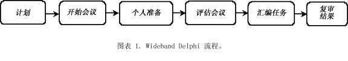
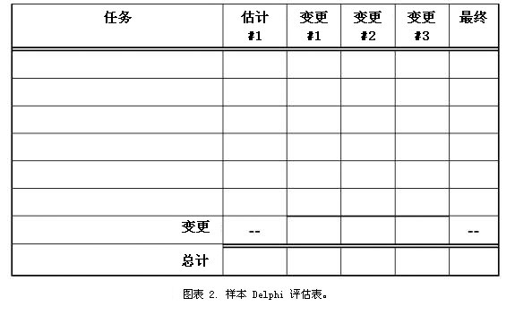
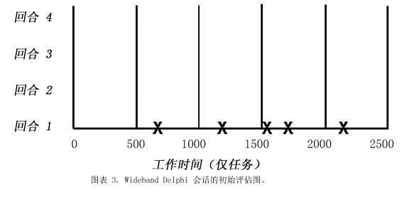
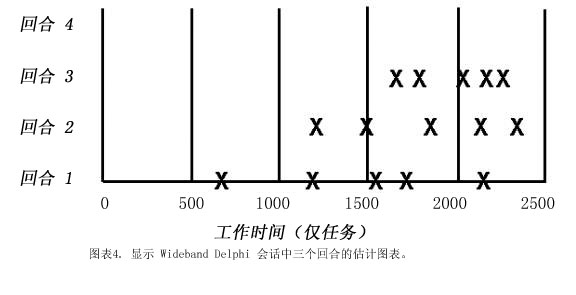

|
经 Software Development Magazine 授权许可，由 Karl Wiegers（www.processimpact.com）为 RUP 撰稿。由 Rational Software
Corporation 进一步编辑。
简介
本指南描述可以用于估计软件开发工作量的一种技术。Wideband Delphi 评估方法可以总结如下：
-
选择一个专家团队，并为他们中的每一个人提供要估计的问题的描述。
-
要求每个专家提供工作量的估计（通常匿名），包含将该问题细分为一个任务列表，并为每个任务做出一个工作量估计。
-
然后这些专家协作，迭代地修订他们的估计，直到大家意见一致。
使用 Wideband Delphi
方法较之从单个个人获得估计，可提供若干优点。首先，它帮助构建一个完整的任务列表或主要任务的工作分解结构，因为每个参与者都将考虑任务。一致意见方法有助于消除由自以为是的专家、经验不足的估计者或有私心或目标不同的有影响的个人所做出的估计中的偏差。与他人生成的估计相比，人们一般更看重他们帮助产生的估计。估计任务中的任何参与者都不知道“正确的”答案，产生的多个估计表明了这种不确定性。最后，Delphi
方法的用户认识到在任何复杂的任务中迭代的价值。
应用 Wideband Delphi
Wideband Delphi 可以用于虚拟地估计任何事物 － 实施特定子系统需要的工月数、整个产品中的代码行数或类数，或者重新装修比尔·盖茨的房子所需要的油漆量，或者使一个特定组织达到“能力成熟度模型”的第 2 层所需要的工作量。
Delphi 方法帮助您开发一个详细的工作分解结构，它提供了从底到顶评估工作量、时间表或规模的基础。Delphi
会话的起点可以是一个“远景”文档、正在估计的问题的一个更详细的“需求”规范、初始高级体系结构描述或一个项目时间表。输出是一个更详细的项目任务列表；一个相关联的高质量、与流程相关的开销任务的列表；估计假设；以及一组任务和整个项目的估计（每个参与者一份）。
图 1 说明了 Wideband Delphi
会话的流程。在计划期间，定义正在估计的问题并选择参与者。开始会议使所有估计者都专注于该问题。然后，每个参与者各自准备他或她的初始任务列表和估计。他们将这些项在估计会议上提出，在会议期间，经过若干次估计周期，将产生一个更全面的任务列表和经过修订的一组估计。然后，协调人或项目经理脱机合并这些各种各样的估计信息，并且团队复审估计的结果。当满足某个预先定义的退出条件时，该会话完成。产生的估计范围与任何单一估计相比，都是对将来更现实的预测。让我们依次看一下这些流程步骤中的每一个步骤。

当计划 Wideband Delphi
会话时，定义问题并选择参与者。开始会议使所有估计者都专注于该问题。然后，每个参与者各自准备初始任务列表和估计。在估计会议期间，若干估计周期将产生一个更全面的任务列表和经过修订的一组估计。然后该信息被脱机合并，团队复审这些估计的结果。当满足退出条件时，该会话完成。
计划
Wideband Delphi
会话开始以定义问题并确定问题的范围开始：远景、用例模型、现有系统、初步体系结构。大问题被细分为可以管理的小部分，这些小部分可以（可能由不同的团队）更精确地估计。启动估计任务的人汇编一个问题规范，该规范可以向参与者提供足够信息，以生成可信并有见地的估计。
估计参与者包括一名协调人（该协调人计划并协调该任务）、项目经理和两到四个其他估计者。协调人应了解足够信息以作为估计者参与，但同时应充当一个公平的推动者，不会以他或她个人的偏见或观点来曲解结果。选择这些参与者是因为他们了解问题或项目以及相关联的估计问题。
开始
初始开始会议耗时一般不超过一个小时，它将所有参与者召集到一起，为估计问题加速。 协调人向不熟悉 Wideband Delphi
的团队成员说明它，并向其他估计者提供问题的规范，以及任何假设或项目约束。协调人努力向估计者提供足够信息，以在不会不当影响他们的估计的情况下让他们很好地完成工作。
团队复审估计目标，并讨论该问题和任何估计问题。参与者对以下各项达成协议：他们将使用的估计单位、例如周、工时、美元或代码行数。如果协调人确定所有团队成员都有足够知识可以参与估计任务，则该团体可以启动了。否则，参与者可能需要更完全地得到关于他们正在评估的问题的信息，或可能替换为可以生成更精确的估计的其他人。
要确定您是否已准备好继续 Wideband Delphi 会话，请检查您的进入标准 － 即，使您继续随后的流程步骤而必须满足的先决条件。在您投入估计活动之前，请确保满足以下条件：
-
已选择了适当的团队成员。
-
已举行了开始会议。
-
参与者已经对评估目标和单位达成协议。
-
项目经理可以参与该会话。
-
估计者具有他们有效参与所需要的信息。
个人准备
让我们假设您想要评估完成某个项目所需要的总工作量（通常以工时表示）。估计流程开始先由每个参与者独立开发达到所述项目目标而必须完成的初始任务列表（使用图 2
所示的表单）。然后，每个参与者估计每个任务将消耗的工作量。将每个任务细分为小得足以进行精确估计的任务。清楚地陈述这些任务，因为某人将必须把所有这些参与者任务列表合并为一个单一的组合列表。
将您为每个项目任务生成的估计（以达成一致的单位）加总，以生成初始总估计。

估计流程开始先由每个参与者独立地使用此表单开发达到所述项目目标而必须完成的初始任务列表。
您的估计不应受到任务项目经理或其他项目干系人所盼望的答案的影响。很有可能估计会超出可以接受的项目时间表、工作量或成本、需要协商的情况的范围，并可能导致范围缩小、时间表延长或资源调整。但是不要让外部压力影响您对将如何完成该项目的最佳计划。
除了确定项目任务，单独记录相关或支持性任务的任何任务。
请记住，在第一个周期中列出处理管理、配置管理和流程相关任务的任务。确保包含测试或检查任务之后的返工任务。返工以纠正缺陷是无法更改的事实，所以您应对其做出计划。如果您在估计一个时间表，还要考虑不特定于您可能必须构建到计划中的项目的任何开销任务。
它们包括会议、假期、培训、其他项目分配和种种消耗日常时间的其他事项。
由于非常不同的假设可以导致很大的估计变化，所以请记录准备估计时您所做的任何假设。例如，如果您假设将购买一个特定的组件库，或重用来自先前项目的一个组件库，请写下来。另一个估计者可能假设该项目将开发该库，这将导致你们两个的总估计不匹配。
请牢记以下估计指南：
-
假设一个人（您）将执行所有任务。
-
假设所有活动都将顺序执行；此时不要担心先后顺序和先行作业任务。
-
假设您可以不间断地致力于每个任务（这看起来可能过于乐观，但这简化了估计过程）。
-
以日历时间单位，列出您预期在任务之间遇到的等候时间。这将帮助您稍后将工作量估计转换为时间表估计。
估计会议
协调人通过收集参与者各自的估计并创建如图 3 的图表而开始估计会议。每个参与者的总项目估计在“回合 1”行中显示为一个
X。每个估计者可以看到他或她的初始值在频谱中处于什么位置。初始估计可能将覆盖一个大得惊人的范围。想像一下通过询问一个参与者的估计可能已收集到的不同结论，并使用它计划项目。

协调人通过收集参与者各自的估计并作图而开始估计会议。每个参与者的总项目估计在“回合 1”行中显示为一个 X。初始估计可能将覆盖一个大得惊人的范围。
在一些组织中，协调人将不区别每个估计由谁创建；他们感到这种匿名是 Delphi
技术的重要方面。匿名可以防止耿直的同事迫使其他参与者以他或她的方式看问题。这也意味着当团队成员自己的分析导致不同的结论时，他们遵从最令人尊敬的参与者的判断的可能性减少。 但这不是必须的。
每个估计者都阅读他的初始任务列表，确定做出的任何假设并提出任何问题，而不透露哪些估计是他的。每个参与者将已列出需要执行的不同任务。组合这些个人的任务列表会产生一个比任何单个估计者可能生成的更完整的列表。此方法对多达数十的单个任务都有作用。如果任务数量更多，它们可能过于详细了。您可能想要将该问题细分为若干子问题并逐个估计它们。
在此初始讨论期间，团队成员也谈论他们关于该问题的假设和估计问题。结果，团队将开始集中于共享的一组假设和公共的任务列表。保留此最终任务列表，以用作下一次必须估计类似项目时的起点。
在此初始讨论之后，所有参与者在会议室中同时（沉默地）修改他们的估计。他们可以基于讨论中公认的信息修订他们的任务，并且将基于他们对任务范围的新理解或更改的假设来调整单个任务估计。所有估计者可以向他们的表单中添加新任务，并记下他们想要对初始任务估计所做出的任何更改。对所有任务的净更改等于该参与者总项目估计中的更改。
协调人收集修订后的整体估计，并将它们绘制在同一图表的“回合 2”行中。为了更直观，我已在白板上进行了此操作。如图 4 所示，第 2 个回合可能产生一个较窄的估计分发，其中心是比回合 1
的均值高的均值。更多回合应进一步使该分发变窄。修订任务列表、讨论问题和假设并准备新估计这个周期继续进行，直到符合以下条件：
-
您完成了四个回合
-
这些估计已经集中到一个可以接受的窄范围中（如上定义）
-
符合已分配的会议时间（通常是两小时）
-
所有参与者不愿意改变他们最后的估计

讨论初始估计之后，所有参与者都修改他们的估计。协调人收集修订后的整体估计，并将它们绘制在同一图表的“回合 2”行中。这些稍后的回合可能产生一个较窄的估计分发，其中心是比回合 1 的均值高的均值。
协调人使这个群体保持在适当轨道上，将讨论限定时间为 15 或 20
分钟以避免无休止的谈论。协调人应遵循有效的会议辅助做法，例如按时开始和结束、鼓励所有参与者发表自己的看法，并维持公平和非判断性的环境。尽管保持各自估计的匿名对于前两回合很重要，团队成员可能在某个时间同意将他们所有的卡片放在桌子上并通过公开的讨论直至结束。这给他们一个机会，来讨论在估计上存在很大分歧的任务。否则，直到该会话结束，协调人也不会认识生成每个最终估计的个人。
汇编任务
当估计会议结束时，工作并没有完。协调人或项目经理将这些项目任务及其各自的估计汇编为单独一份主任务列表。此人还合并各人的假设、与质量和流程相关的任务、开销任务和等候时间的列表。
合并过程包括除去重复的任务，以及合理地解决对单个任务的不同估计。“合理”并不意味着将该团队的估计替换为项目经理喜欢的值。明显类似的任务有着较大估计差异可能意味着估计者们以不同的方式解释了该任务。例如，两个人可能都有一个称为“实施类”的任务。但是，一个估计者可能将单元测试和代码复审包含在该任务中，而另一个仅注重编码工作。所有估计者应清楚地定义他们的任务，以在此合并步骤中最大限度地减少混乱。合并步骤应保留每个任务的估计范围，但如果一个估计者的任务估计与其他估计者的任务估计非常不同，请查明原因，然后可能丢弃或修改它。
复审结果
在最后的步骤中，估计团队复审总结的结果。并对最终的成果达成一致。项目经理向其他估计者提供总任务列表、单个估计、累计估计、假设列表和任何附加信息。将团队重新召集起来，举行 30 分钟到 60
分钟的复审会议，以结束估计任务。此会议还为团队提供了一个机会，以反思这个 Wideband Delphi 流程的执行，并建议可以如何对将来的应用程序进行改进。
这些参与者应确保最终的任务列表尽可能完整。他们可能已考虑了估计会议之后添加的任务，现在这些任务就可以添加到任务列表中了。检查以确定是否已经以合理的方式合并了单个估计差异很大的任务。最终目标是生成一个估计范围，允许项目经理和其他主要项目干系人以可以接受的置信度水平继续项目计划和执行。
完成估计
当满足指定的退出条件时，估计流程即告结束，此时您可以宣布胜利并继续做其他事情了。一般的 Wideband Delphi 退出条件是：
总任务列表已汇编而成。
您具有了一个总结的估计假设列表。
估计者已对将他们各自的估计合成单一的，具有可以接受的范围的集合的方式达成一致意见。
现在您必须确定如何处理数据。您可以只是求最终估计的平均值以得出一个单点估计值，这是请求该估计的人可能想要听到的。 但是，单独一个平均值可能不够，保留估计范围有其优点。
估计是对将来的预测，该范围反映的是“凝视水晶球”时的内在不确定性。您可以提供三个数字：估计的平均值（作为计划情况）、最小值（作为最好情况）和最大值（作为最坏情况）。或者您可以提供平均值作为名义预期成果，加上最大值减平均值的差，并减去平均值减最小值的差。
每个估计都有一个实现的概率，所以一组估计形成一个概率分发。在 A Discipline for Software Engineering（Addison-Wesley，1995）的第 6 章中，Watts Humphrey
描述了一种算术地精确方式，组合多个估计及其不确定性以生成具有较高和较低预测间隔的总估计。另一种精密的方法是执行 Monte Carlo 仿真，以基于最终的估计值生成可能的估计成果的概率分发。
尽管 Delphi 会话的结果可能不是提议人和监管人想要听到的，但他们可以决定想要以 10% 的置信度水平、90% 的置信度水平或之间的某个水平计划项目。确保将实际项目结果与您的估计相比较以改进将来的估计精确性。
再来一次（迭代）
此方法中一个比较好的方面是，例如在先启阶段中完成初始和相当粗略的估计之后，可以在每个阶段（或甚至在每个迭代）中精化这些估计。如果相同的估计者在场，从他们在上个估计周期中停止的地方开始，该流程可能会快一些。
关于该问题有更多信息可用，一些假设已修改，一个体系结构已到位来帮助细分该活动。
新的估计可能有一个较窄的范围，但是不一定在原来的估计的范围内：或高一些、或低一些。如果高一些，则对项目经理有一个清楚的风险信号，即必须马上处理风险。
Wideband Delphi 已得到评估
没有任何估计方法是十全十美的；否则，它就会被称为预测，而不是估计了。但是 Wideband Delphi 技术采用了一些可靠的估计原则。该团队方法认识到组合多个专家角度的价值。生成的估计范围反映了估计流程中内在的可变性。
尽管耗时较多，且需要一组富有经验的估计者，但是 Wideband Delphi 从估计中除去了一些政治权术，并过滤掉极端的初始值。
|